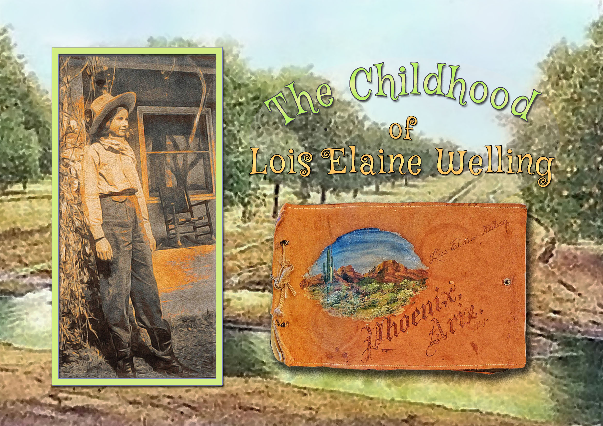

Books
DWS Press publishes memoirs, autobiographies, travel narratives, historical works, poetry, and reflective writing drawn primarily from the Sullivan Family Archive.

Navigator
A World War II memoir by William John Sullivan. Navigator chronicles the author's journey from flight training through combat operations in the South Pacific as a United States Army Air Forces navigator.

Chief
William John Sullivan's autobiography. Chief follows a lifetime of experiences, military service, family history, travel, and personal reflection.

Arizona Rose
The autobiography of Lois Elaine Welling Sullivan. Arizona Rose recreates childhood in Phoenix, Arizona during the 1920s and 1930s through memoir, photographs, and family history.
Format: Large-format coffee table edition (10" × 13")
Conjugating Love
A meditation by Lois Sullivan combining poetry, reflection, and original watercolor artwork. The book explores love, faith, family, identity, and personal growth.
Ocho
A six-month family journey through Mexico in 1958. Ocho combines the voices of William John Sullivan and Lois Welling Sullivan to tell the story of an extraordinary family adventure.
Status: In Development